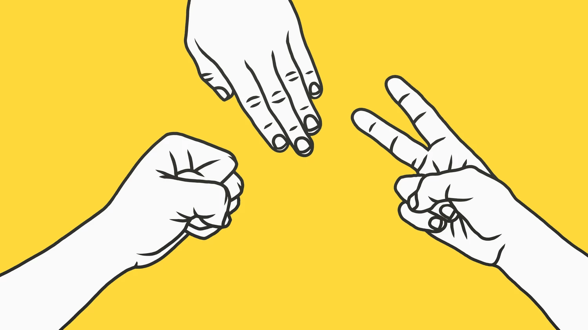
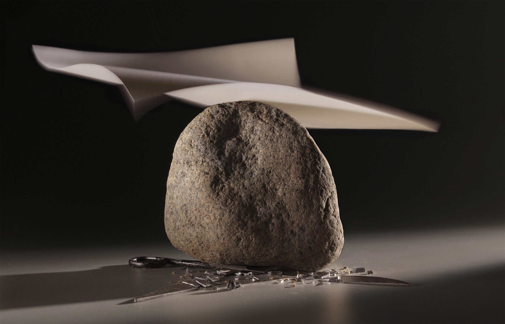
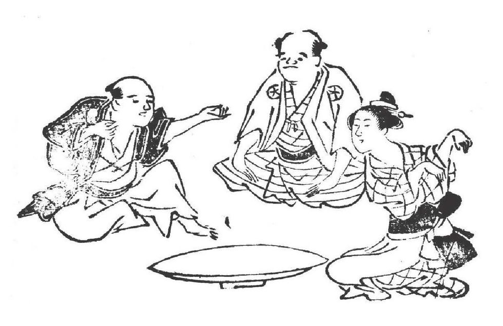
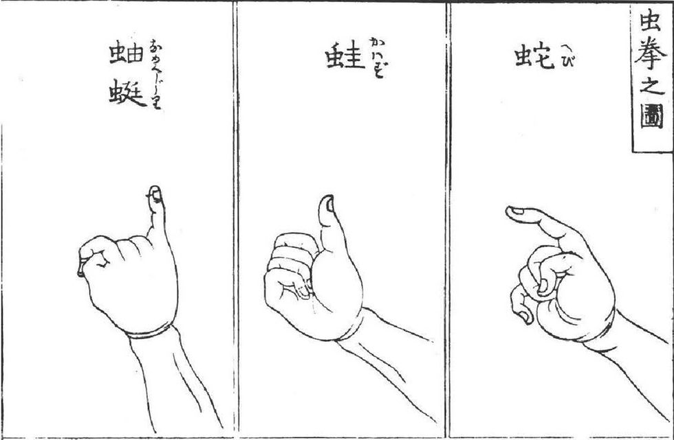
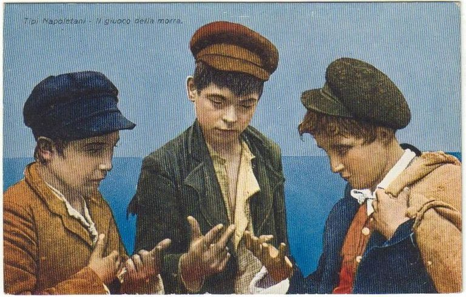
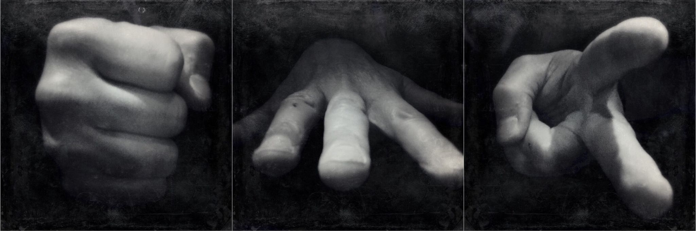
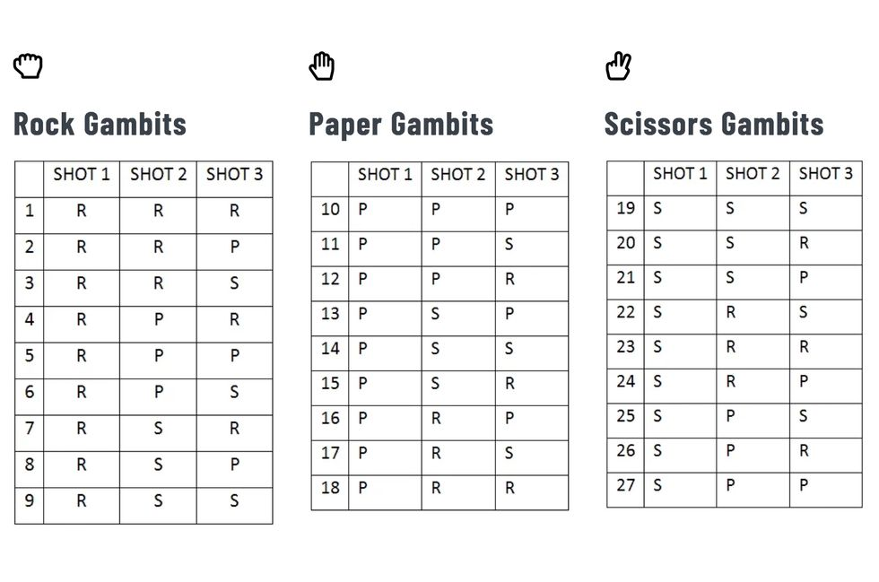
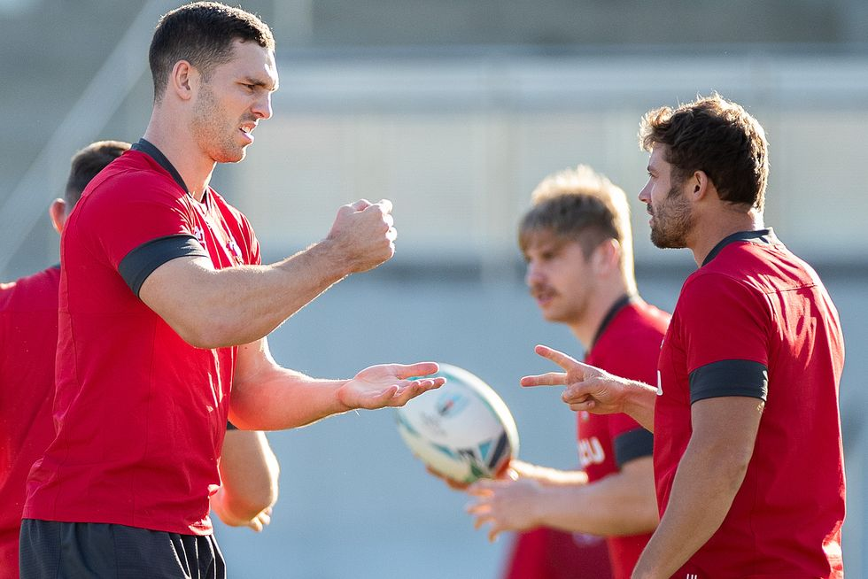
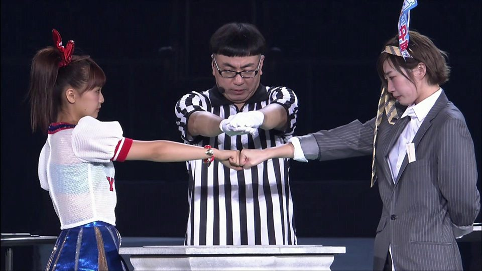

Давай скинемся? История известной игры «Камень-ножницы-бумага»
О старой доброй игре и ее путешествии с Востока на Запад
Назад к навигации →
class=""Вспомните, как вы с друзьями решаете, кому достанется последний кусок пиццы или кто окажется тем самым «счастливчиком», который заплатит за счет. А если дело касается детских игр, как определить, кто будет водить? Когда нет времени на аргументы и дебаты, на помощь всегда приходит старый добрый способ – «камень-ножницы-бумага». Вы просто складываете пальцы в кулак и ждете, что ваш «камень» затупит «ножницы» приятеля.
Игра прекрасна своей простотой: два игрока, три возможных хода, один конечный результат. Камень бьет ножницы, которые режут бумагу, а она, в свою очередь, покрывает камень. Каждая игра заканчивается ясным, четким исходом: есть победитель, есть проигравший. Либо продолжается новым раундом, если проигравший хочет взять реванш, а победитель – закрепить победу. «Камень-ножницы-бумага» буквально не оставляет возможности и пространства для хитрых маневров – здесь все максимально непредвзято и справедливо.
Играя в «камень-ножницы-бумагу» с ранних лет, вы вряд ли задумывались, как древняя китайская игра оказалась на Западе – там, где она сейчас наиболее популярна. Почему на протяжении многих лет мы продолжаем использовать эти три простых жеста? И, самое главное, есть ли «читы и коды», которые каждый раз будут гарантировать выигрыш? Ответы на все эти вопросы вы найдете ниже.
Восточные истоки
Назад к навигации →
Первое упоминание об игре в ее современной версии можно найти в книге «Wuzazu», написанной китайским писателем Се Чжаочжи во времена поздней династии Мин. Автор называет игру «shoushiling» и датирует ее происхождение периодом династии Хань (206 до н.э. – 220 н.э.). Ли Рихуа, известный художник, критик и чиновник династии Мин, тоже пишет о «shoushiling» в своем произведении «Записки Люянжая» («Note of Liuyanzhai»).
Последующие упоминания об игре встречаются в Японии – стране, которая зачастую ошибочно считается родиной игры. В своем научном труде «Some Thoughts on the Ken Game in Japan: From the Viewpoint of Comparative Civilization Studies» 1995 года Сепп Линхарт подтверждает китайское происхождение игры и ее последующую популярность в Японии. Это был шаг, который немного видоизменил жесты и правила. С тех пор люди по всему миру играют знакомым всем способом.

На фото: Три человека играют в «лисий кулак» («кицунэ-кен»), раннюю версию японской игры «муши-кен» («сансукуми-кен»). Опубликовано в 1774 году.
На протяжении всей истории Японии игры, похожие на «камень-ножницы-бумагу», всегда назывались «sansukumi-ken». Это термин, который дословно переводится как «трое боятся друг друга». Проще говоря, это игры, в которые играют тремя жестами («кен» означает кулак). Одним из первых сансукуми-кенов, завоевавших популярность по всей стране, была игра «муши-кен». По ее правилам, игроки использовали свои руки, чтобы изобразить лягушку (большой палец), слизняка (мизинец) и змею (указательный палец). Лягушка побеждает слизняка, который одолевает змею, а она, в свою очередь, «бьет» лягушку.

На фото: Змея (hebi – справа), лягушка (kawazu – посередине), слизняк (namekuji – слева) в муши-кен.
Сегодня самая популярная версия сансукуми-кен как в Японии, так и за ее пределами включает в себя привычные нам жесты в виде камня, бумаги и ножниц. В Японии эта игра называется «jan-ken» или «jan-ken-pon».
После того как расширились связи между Японией и западными странами, «джан-кен» оказался в другой точке мира. К началу 20-го века все больше американцев начали осваивать правила игры – этот факт был зафиксирован в европейских СМИ. В статье в «The Washington Herald», опубликованной в августе 1921 года, «камень-ножницы-бумагу» прозвали «китайской азартной игрой». В том же году издание «The Sydney Morning Herald» опубликовало статью о крикете, в которой не обошли стороной и нашу игру, назвав ее «Тевтонским методом жеребьевки».
В Англии одно из первых упоминаний об игре появилось в письме читателя, опубликованном в 1924 году в «The Times». Автор описал игру под названием «zot» – он заметил, как ей развлекаются в средиземноморских портах. Сходство между ней и современной вариацией игры на руках поразительно. Интересен тот факт, что письмо было написано в ответ на ранее опубликованную статью, в которой подробно описывали традиционную итальянскую игру «Морру» («Murra»), которая тоже похожа на «камень-ножницы-бумагу».

На фото: Старая открытка, изображающая итальянских мальчишек, которые играют в Морру.
Если обращаться к Франции, мы наткнемся на статью 1927 года в детском журнале «La Vie Au Patronage», в которой идет речь о «японской игре» («jeu Japonais»). Французское название игры – «чи-фу-ми», созвучное с древними японскими словами, обозначающими «один-два-три».
Переместимся через Атлантический океан. 22 мая 1932 года в «The New York Times» вышла статья Мэрион Мэй Дилтс о часе-пик в Токио. И что вы думаете? В своем материале Дилтс объясняет правила игры, в которую, по ее наблюдениям, играли японцы.
Так, игра «камень-ножницы-бумага» официально захватила весь мир.
Больше, чем просто удача
Назад к навигации →
Несмотря на то что «камень-ножницы-бумага» в основном рассматривается как игра, где исход решают удача и случай, все же эксперты признали, что у профессиональных игроков существуют стратегии. Это объясняет появление и проведение международных соревнований, национальных лиг и множество денежных конкурсов.
В основе наиболее часто используемых стратегий лежит главная мысль: единственный способ увеличить шансы на победу – использовать полный набор случайных ходов. В то время как дети ежедневно совершают случайные действия (та самая характеристика, которая делает их трудными для понимания оппонентами), взрослые склонны задумываться над каждым шагом и ведут себя предсказуемо – это можно вычислить по их настроению, прошлому опыту, уровню стресса и другим факторам.
Турнир Bud Light Rock Paper Scissors Championship Tournament в Лас-Вегасе, 2007 год Фото: Jae C. Hong / AP
Поэтому, чтобы хотя бы попытаться выработать стратегию, профессиональные игроки придумали способы увеличить случайность своих ходов во время каждого раунда. Для этого многие используют гамбиты (как в шахматах), которые представляют собой заранее выбранные серии ходов, в зависимости от стратегического намерения. Заранее определив свою тактику, опытные игроки маскируют свои естественные человеческие чувства, которые могут сорвать их план во время игры.
Вспомните, как вы нервничаете, когда мечетесь между выбором камня или бумаги. По иронии судьбы, искусственно избавляясь от случайных действий за счет заранее спланированной тактики, игроки играют более рандомно.
Если рассматривать игру с точки зрения математики, то в ней есть только 27 возможных гамбитов. И хотя в турнирах профессиональными игроками используется каждая из комбинаций, выделяют так называемую «Великую восьмерку гамбитов», которые применяются гораздо шире и даже имеют полуофициальные названия.
- 1. Лавина (камень, камень, камень).
- 2. Бюрократ (бумага, бумага, бумага).
- 3. Набор инструментов (ножницы, ножницы, ножницы).
- 4. Крещендо (бумага, ножницы, камень).
- 5. Развязка (камень, ножницы, бумага).
- 6. Пригоршня долларов (камень, бумага, бумага).
- 7. Бумажные куклы (ножницы, бумага, бумага).
- 8. Сэндвич с ножницами (бумага, ножницы, бумага).
Помимо гамбитов, часть выигрышной стратегии, по словам профессиональных игроков, – способность предсказывать следующий ход противника по его телодвижениям. Это подводит нас к рассказу о роботе Janken.
В июне 2012 года исследователи из Токийского университета представили робота, способного каждый раз побеждать в игре «камень-ножницы-бумага». Они назвали его «Janken» в качестве отсылки к японскому названию игры. С технической точки зрения робот достигает постоянной победы, всего лишь обманывая соперников. Никаких хитроумных стратегий. Вместо того чтобы предсказывать движение противника, робот быстро реагирует на него с помощью высокоскоростной системы, которая генерирует ответ в течение 20 миллисекунд после распознавания.
Год спустя, в 2013 году, ученые из лаборатории Исикава Оку (часть Токийского университета) изобрели вторую версию робота. Ему требуется всего лишь миллисекунда, чтобы распознать жест руки оппонента и нанести выигрышный контрудар.
Игра остается игрой
Назад к навигации →01 апреля 2018 ГОДА ПЕРВЫЙ В Н.НОВГОРОДЕ ЧЕМПИОНАТ ПО ИГРЕ «КАМЕНЬ, НОЖНИЦЫ, БУМАГА» В ТРК «НЕБО»!
Учитывая популярность игры и современную тенденцию превращать хобби в источник заработка, существование профессиональных лиг по игре «камень-ножницы-бумага» не должно вызывать удивления. Также как и титулы, которые получают профессиональные игроки, а также денежные призы в десятки тысяч долларов.
Один из самых известных участников – Джейсон Симмонс, больше известный как Master Roshambollah. Американец – бывший профессиональный игрок, который написал предисловие к Официальному стратегическому руководству к игре, а также работал комментатором телевизионных матчей на ESPN (американский спортивный канал) и других каналах. Рошамболла взял свое прозвище от «roshambo» (или «rochambeau») – альтернативного названия игры «камень-ножницы-бумага».

По распространенной на западном побережье (в частности, в Северной Калифорнии) легенде, такое название связано с именем графа де Рошамбо. Он был французским дворянином, который участвовал в войне за независимость Америки. И хотя нет никакого письменного исторического доказательства, предположительно, Рошамбо использовалось в качестве кодового слова во время сражения при Йорктауне, во время которого граф командовал французскими войсками.

По данным Всемирной ассоциации игры, «нет никаких доказательств», связывающих имя дворянина с игрой. На сайте ассоциации упоминается «первое в истории использование «roshambo» в качестве синонима игры «камень-ножницы-бумага» в «Руководстве для отдыхающих», изданном в Окленде в 1936 году. Слово было записано как «ro-sham-beau».
Другие предполагают, что такое название придумали восточноазиатские иммигранты, большой поток которых наблюдался в Сан-Франциско в 1930-х годах. Знакомые с японским аналогом игры «джан-кен-пон», местные дети американизировали название, придумав термин, который был похож по звучанию на оригинал.
Но независимо от того, как вы называете эту игру – «камень-ножницы-бумага», «цу-е-фа», «бу-це-фа» или «ка-ма-но», – можно сказать с полной уверенностью: она выдержала испытание временем. За многолетний период игра не только стала неотъемлемой частью различных культур, но и сохранила свою суть, практически не изменившись по форме и функциям: правила одинаково независимы от того, где вы играете.